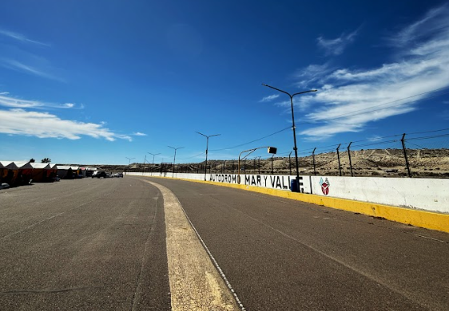

La tercera fecha del zonal ya tiene nueva fecha en Mar y Valle

Luego de la suspensión por cuestiones climáticas, la Asociación Mar y Valle confirmó la reprogramación de la tercera fecha del automovilismo zonal chubutense.
La actividad se disputará finalmente los días 15, 16 y 17 de mayo en el autódromo Mar y Valle de Trelew, manteniendo el cronograma correspondiente a la tercera presentación del campeonato provincial.
La fecha había sido suspendida durante la semana debido a las condiciones climáticas pronosticadas para el fin de semana, situación que obligó a reorganizar el calendario de manera inmediata.
Con esta confirmación, las categorías Monomarca R12, TP Gol 1.6, TP 1100, TC Austral y TC Patagónico volverán a prepararse para afrontar una nueva cita del campeonato en el trazado trelewense.
Ahora, pilotos y equipos tendrán algunos días más de trabajo antes de volver a acelerar en una fecha que promete una gran convocatoria y campeonatos cada vez más ajustados.